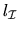

Next:
Essentials
Up:
LAPACK Users' Guide Release
Previous:
Preface to the Second
Contents
Index
Guide
Essentials
LAPACK
Problems that LAPACK can Solve
Computers for which LAPACK is Suitable
LAPACK Compared with LINPACK and EISPACK
LAPACK and the BLAS
Availability of LAPACK
Commercial Use of LAPACK
Installation of LAPACK
Documentation for LAPACK
Support for LAPACK
Errata in LAPACK
Other Related Software
Contents of LAPACK
What's new in version 3.0?
Structure of LAPACK
Levels of Routines
Data Types and Precision
Naming Scheme
Driver Routines
Linear Equations
Linear Least Squares (LLS) Problems
Generalized Linear Least Squares (LSE and GLM) Problems
Standard Eigenvalue and Singular Value Problems
Symmetric Eigenproblems (SEP)
Nonsymmetric Eigenproblems (NEP)
Singular Value Decomposition (SVD)
Generalized Eigenvalue and Singular Value Problems
Generalized Symmetric Definite Eigenproblems (GSEP)
Generalized Nonsymmetric Eigenproblems (GNEP)
Generalized Singular Value Decomposition (GSVD)
Computational Routines
Linear Equations
Orthogonal Factorizations and Linear Least Squares Problems
QR
Factorization
LQ
Factorization
QR
Factorization with Column Pivoting
Complete Orthogonal Factorization
Other Factorizations
Generalized Orthogonal Factorizations and Linear Least Squares Problems
Generalized
QR
Factorization
Generalized
RQ
Factorization
Symmetric Eigenproblems
Nonsymmetric Eigenproblems
Eigenvalues, Eigenvectors and Schur Factorization
Balancing
Invariant Subspaces and Condition Numbers
Singular Value Decomposition
Generalized Symmetric Definite Eigenproblems
Generalized Nonsymmetric Eigenproblems
Eigenvalues, Eigenvectors and Generalized Schur Decomposition
Balancing
Deflating Subspaces and Condition Numbers
Generalized (or Quotient) Singular Value Decomposition
Performance of LAPACK
Factors that Affect Performance
Vectorization
Data Movement
Parallelism
The BLAS as the Key to Portability
Block Algorithms and their Derivation
Examples of Block Algorithms in LAPACK
Factorizations for Solving Linear Equations
QR
Factorization
Eigenvalue Problems
LAPACK Benchmark
Accuracy and Stability
Sources of Error in Numerical Calculations
Further Details: Floating Point Arithmetic
How to Measure Errors
Further Details: How to Measure Errors
Further Details: How Error Bounds Are Derived
Standard Error Analysis
Improved Error Bounds
Error Bounds for Linear Equation Solving
Further Details: Error Bounds for Linear Equation Solving
Error Bounds for Linear Least Squares Problems
Further Details: Error Bounds for Linear Least Squares Problems
Error Bounds for Generalized Least Squares Problems
Linear Equality Constrained Least Squares Problem
Further Details: Error Bounds for Linear Equality Constrained Least Squares Problems
General Linear Model Problem
Further Details: Error Bounds for General Linear Model Problems
Error Bounds for the Symmetric Eigenproblem
Further Details: Error Bounds for the Symmetric Eigenproblem
Error Bounds for the Nonsymmetric Eigenproblem
Further Details: Error Bounds for the Nonsymmetric Eigenproblem
Overview
Balancing and Conditioning
Computing
s
and
Error Bounds for the Singular Value Decomposition
Further Details: Error Bounds for the Singular Value Decomposition
Error Bounds for the Generalized Symmetric Definite Eigenproblem
Further Details: Error Bounds for the Generalized Symmetric Definite Eigenproblem
Error Bounds for the Generalized Nonsymmetric Eigenproblem
Further Details: Error Bounds for the Generalized Nonsymmetric Eigenproblem
Overview
Balancing and Conditioning
Computing
s
i
, ,
and
,
Singular Eigenproblems
Error Bounds for the Generalized Singular Value Decomposition
Further Details: Error Bounds for the Generalized Singular Value Decomposition
Error Bounds for Fast Level 3 BLAS
Documentation and Software Conventions
Design and Documentation of Argument Lists
Structure of the Documentation
Order of Arguments
Argument Descriptions
Option Arguments
Problem Dimensions
Array Arguments
Work Arrays
LWORK Query
Error Handling and the Diagnostic Argument INFO
Determining the Block Size for Block Algorithms
Matrix Storage Schemes
Conventional Storage
Packed Storage
Band Storage
Tridiagonal and Bidiagonal Matrices
Unit Triangular Matrices
Real Diagonal Elements of Complex Matrices
Representation of Orthogonal or Unitary Matrices
Installing LAPACK Routines
Points to Note
Installing ILAENV
Troubleshooting
Bug Report Checklist
Installation Debugging Hints
Common Errors in Calling LAPACK Routines
Failures Detected by LAPACK Routines
Invalid Arguments and XERBLA
Computational Failures and INFO
>
0
Wrong Results
Poor Performance
Index of Driver and Computational Routines
Notes
Index of Auxiliary Routines
Notes
Quick Reference Guide to the BLAS
Converting from LINPACK or EISPACK
Notes
LAPACK Working Notes
Susan Blackford
1999-10-01